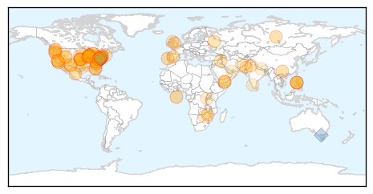
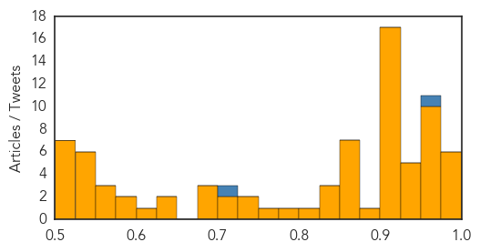

Ebola
30-Day Web Trend
0 alerts, 0 warnings

30-Day Twitter Trend
0 alerts, 0 warnings

Article Locations


Article Confidences

Top Articles:
- 1.000
- Ebola fear infects campuses, affects mobile students
- 1.000
- What is Ebola? Your questions answered – and how UNICEF is helping
- 1.000
- Ebola death toll hits 2,630, Sierra Leone in lockdown
- 1.000
- Ebola Patients Buying Survivors' Blood from Black Market, WHO Warns, Articles
- 1.000
- Sierra Leone shuts down for 3 days to slow Ebola
- 1.000
- Worst Ebola outbreak on record tests global response
- 1.000
- CHRONOLOGY-Worst Ebola outbreak on record tests global response
- 1.000
- Lessons from the Hot Zone
- 1.000
- Ebola Could Mutate Into Airborne Virus
- 1.000
- From African boy to epidemic killing 1000s
- 1.000
- Nam donates to Ebola fight
- 1.000
- 11 Numbers that unveil the 'enormity' caused by World's worst Ebola Outbreak
- 1.000
- Over 700 new Ebola cases reported in one week
- 1.000
- British Ebola survivor flies to US for blood donation
- 1.000
- The Ebola virus outbreak in West Africa is the worst in history
- 1.000
- Ebola aid workers murdered in remote Guinea
- 1.000
- Sierra Leone begins 72-hour lockdown to combat spread of Ebola
- 1.000
- The most from the coast
- 1.000
- Sierra Leone in three day shutdown over ebola disease
- 1.000
- Ebola: joint UN assessment response team heads to Liberia
- 1.000
- Durham prepared for Ebola
- 1.000
- Ebola: joint UN assessment response team heads to Liberia
- 1.000
- More Supplies Reaching Health Workers on Ebola Front Lines - Liberia
- 1.000
- Most Destructive Myths About Ebola Virus, Debunked
- 1.000
- Bodies of attacked doctors & journalists found in Guinea
- 1.000
- Eight members of Ebola prevention team killed in Guinea
- 1.000
- Sierra Leone Starts 'Lockdown' as UN Sounds Alarm on Ebola
- 0.999
- International solidarity in spotlight as efforts to contain Ebola outbreak gather momentum
- 0.999
- Official Numbers From WHO Confirm The Ebola Outbreak Isn’t Showing Any Signs Of Slowing Down
- 0.999
- WHO Continues Ebola Fight Despite Murders
- 0.999
- UN calls Ebola a threat to international peace
- 0.999
- UN calls Ebola a threat to international peace
- 0.999
- UN security council: Ebola threatens global peace, security
- 0.999
- Sierra Leone starts three-day shutdown to contain spread of Ebola disease
- 0.999
- Ebola puts a country in lockdown
- 0.999
- Ebola Crisis in West Africa: Ebola Campaign Team Murdered in Cold Blood as Sierra Leone
- 0.999
- No Ebola case in Trinidad, Health Ministry says after man shows symptoms
- 0.999
- Column: Ebola chaos is contagious
- 0.999
- 2,630 people have died so far from Ebola
- 0.999
- The Spread of Ebola
- 0.999
- Death toll in West Africa Ebola epidemic at 2,630
- 0.999
- Ebola Worst-Case Scenario Has More Than 500,000 Cases
- 0.999
- Ebola aid donated by UK to Sierra Leone
- 0.999
- Ebola worst-case scenario: Over half a million people infected — RT USA
- 0.999
- Sierra Leone to shut down for 3 days to slow Ebola
- 0.999
- Sierra Leone to shut down for 3 days to slow Ebola - National
- 0.999
- Ebola Patients Mistrust Health Workers
- 0.999
- Ebola outbreak: Guinea team found killed
- 0.999
- 'Deserted streets' as Ebola lockdown begins in Sierra Leone
- 0.999
- Death of medical workers a major blow to West Africa’s public health
Showing top 50 articles...
Top Tweets:
- 0.688
- RT: Just had chilling vital talk w? @Laurie_Garrett on Ebola. Outbreak so wide 400000 people could be felled by end of ye…
- 0.672
- New Ebola toll =400k?! Does that inc poss immunity (9% in 2006-08) and unreported cases? MT
- 0.667
- RT: The number of people in West Africa who have died from Ebola doubled in the past month. http://t.co/zY4MT6JXRz
- 0.622
- RT: CVI: Determination of Specific Antibody Responses to the Six Species of Ebola and Marburg Viruses … Read more at http:/…
Unknown
30-Day Web Trend
4 alerts, 0 warnings

30-Day Twitter Trend
0 alerts, 0 warnings

Article Locations

Article Confidences
Top Articles:
- 0.997
- Enterovirus may be cause of ill children in Connecticut
- 0.995
- York prepares for rare respiratory virus affecting children
- 0.994
- Respiratory virus EV-D68 cases found in 4 Southern California children
- 0.988
- Bethel Park retracts warning of respiratory illness
- 0.986
- Allegheny County health officials: Bethel Park schools too quick to release alert on virus
- 0.977
- 2 cases of D68 virus confirmed; 1 from Snohomish County
- 0.974
- Avian Flu In Harbor Seals Could Infect People
- 0.968
- Enterovirus D68: 14 cases confirmed in Hamilton
- 0.966
- Parents advised not to worry
- 0.964
- 3 Enterovirus D68 cases confirmed in Michigan
- 0.963
- Number of suspected enterovirus cases continues to drop in Windsor
- 0.963
- California hit with first 2014 wave of enterovirus D68 — RT USA
- 0.959
- Officials: 706 babies, 43 employees exposed to tuberculosis at El Paso hospital
- 0.956
- Serious respiratory illness has arrived in Seattle
- 0.954
- Children's respiratory illness spreads to West Coast
- 0.951
- Fourteen Hamilton children test positive for D68 virus
- 0.949
- UPDATE: Three Confirmed Cases of Enterovirus D-68 In Michigan
- 0.946
- Health Officials: ‘Just a matter of time before flu hits where you live’
- 0.944
- 3 People in Michigan Test Positive for Rare Enterovirus
- 0.929
- Flu Mist nasal spray replacing standard shot
- 0.928
- Rare respiratory virus spreads to 22 states
- 0.917
- Chicago Tribune
- 0.917
- Chicago Tribune
- 0.917
- Chicago Tribune
- 0.917
- Chicago Tribune
- 0.917
- Chicago Tribune
- 0.917
- Chicago Tribune
- 0.917
- Chicago Tribune
- 0.917
- Chicago Tribune
- 0.917
- Chicago Tribune
- 0.917
- Chicago Tribune
- 0.917
- Chicago Tribune
- 0.917
- Chicago Tribune
- 0.917
- Chicago Tribune
- 0.917
- Chicago Tribune
- 0.917
- Chicago Tribune
- 0.917
- Chicago Tribune
- 0.917
- Chicago Tribune
- 0.892
- Two children first cases of enterovirus in the state
- 0.875
- Health Crisis Looms With Decay of Zimbabwe’s Public Water System
- 0.866
- 5 facts you need to know about the humanitarian crisis in Yemen
- 0.866
- A woman uses her mobile phone at an evacuation centre for flood victims as tropical storm Fung-Wong battered Manila
- 0.866
- Flood victims seek shelter at an evacuation centre after their homes were inundated as Tropical storm Fung-Wong battered the Philippine capital Manila
- 0.866
- Iraqi Kurdish president urges international community to "use all means" to protect Syrian city
- 0.866
- Russian minister says Exxon continues drilling with Rosneft
- 0.866
- Soldiers wait for a tow truck with their stalled military rescue vehicle along a flooded road as tropical storm Fung-Wong battered the Philippine capital Manila
- 0.836
- Three cases of enterovirus D68 confirmed in Mich.
- 0.829
- Case of rare respiratory virus confirmed in Panhandle
- 0.827
- OHA: Blue-green algae in Willamette River toxic species
- 0.814
- Hemispherx Biopharma, Inc. Stock - Yahoo! Finance
Showing top 50 articles...
Top Tweets:
- 0.964
- Flu Fact Friday: The flu vaccine cannot give you the flu.
- 0.705
- Flu season typically starts in the fall and peaks in January/February. Getting the flu vaccine is your best protection against the flu.